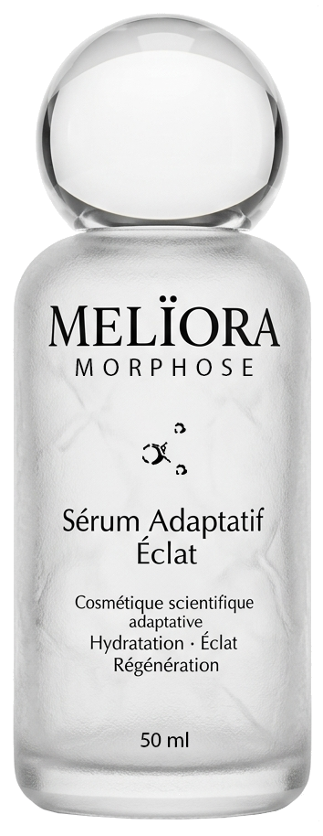

Le Rituel Mélïora
Pour maximiser l'efficacité de la technologie adaptative, suivez notre protocole d'application quotidien.
01
Nettoyer
Purifiez votre peau avec un nettoyant doux pour préparer l'absorption.
02
Appliquer
Prélevez 2 à 3 gouttes de sérum au creux de la main ou directement sur le visage.
03
Masser
Effectuez des mouvements circulaires jusqu'à absorption complète de la formule.
04
Compléter
Si besoin, scellez l'hydratation avec votre crème de jour ou de nuit habituelle.
Fréquence recommandée
Matin et Soir
Une application biquotidienne permet aux actifs neurocosmétiques de réguler les mécanismes cutanés en continu pour des résultats optimaux.
